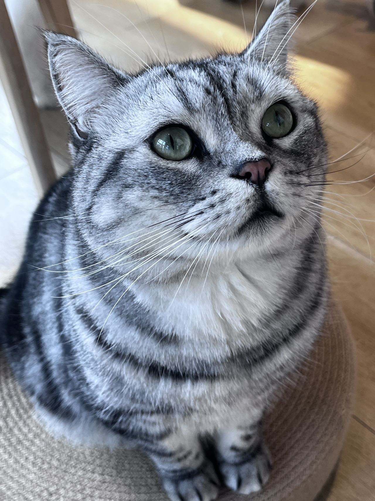
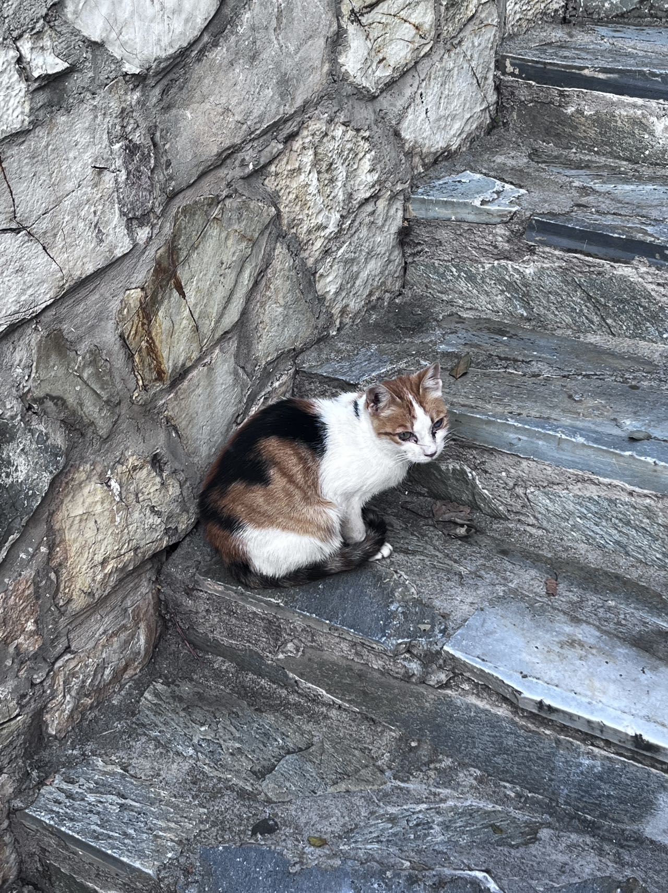
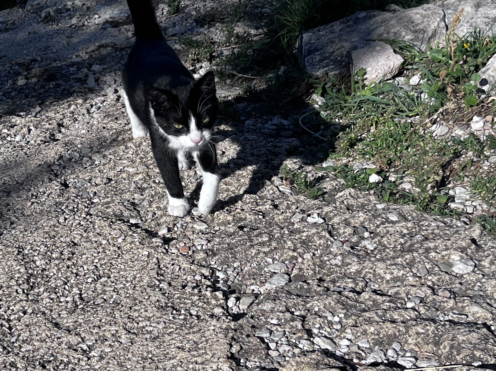
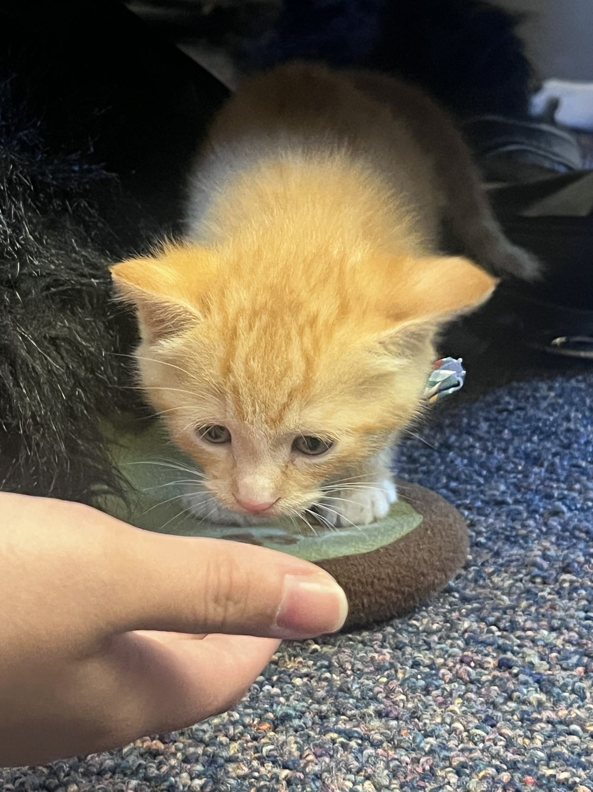
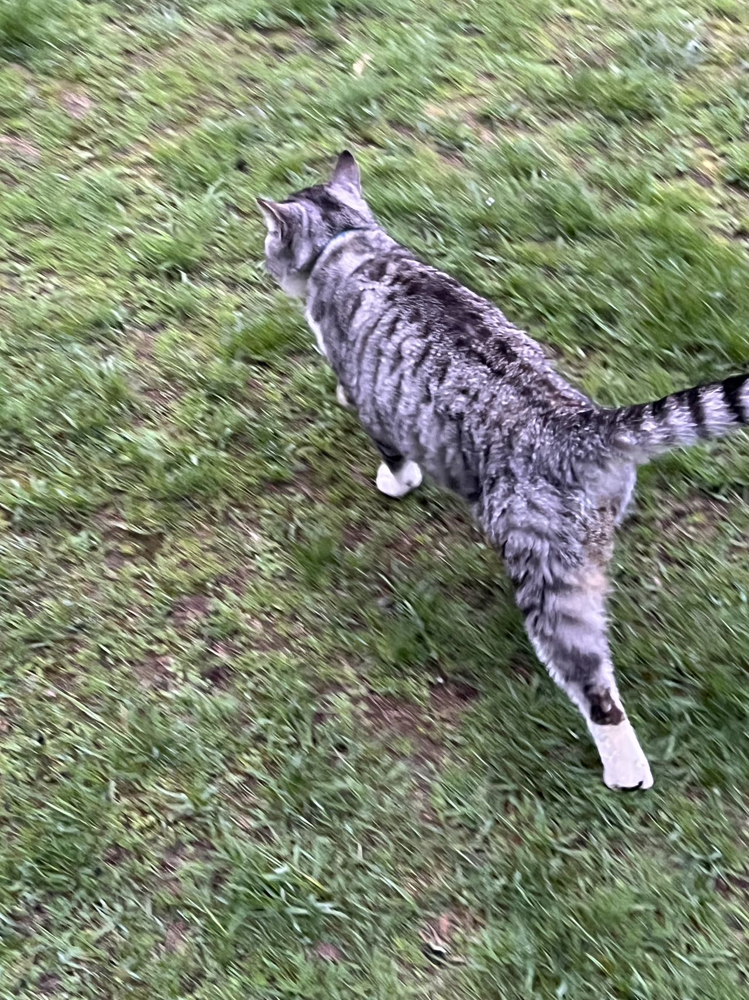
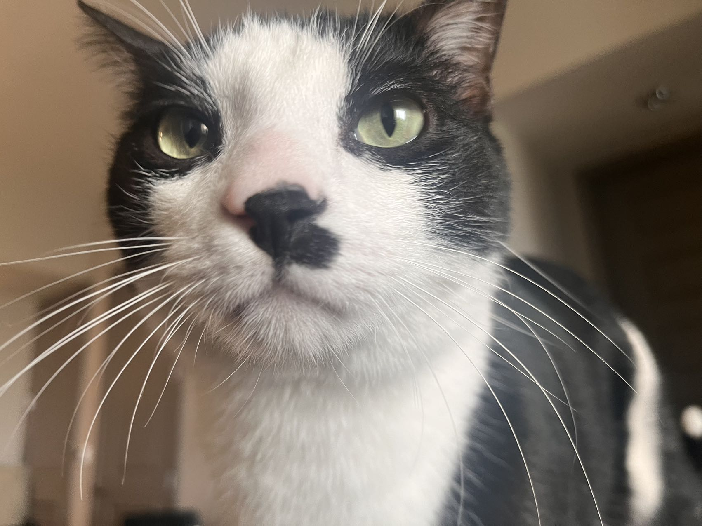
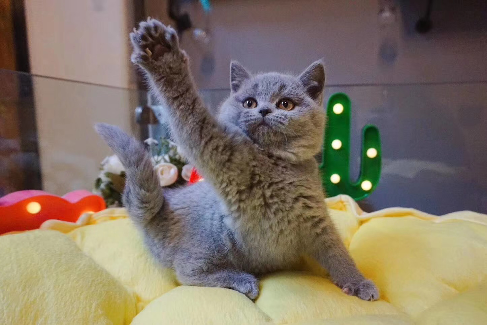
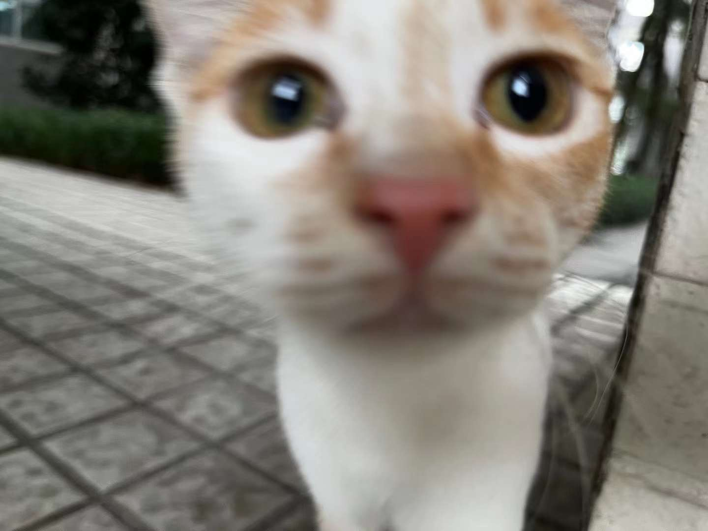
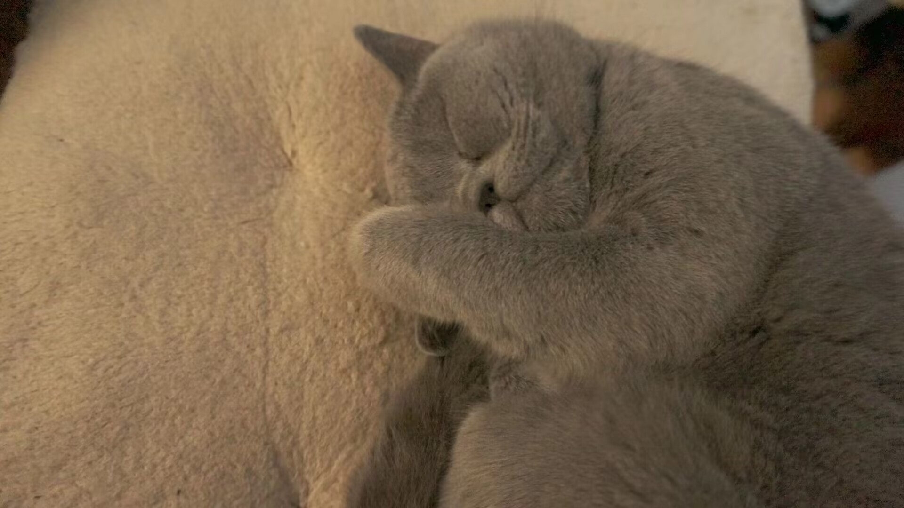

My Interests
Hello, I'm Melody Liu, and I want to share a bit about myself. I have a passion for these things:
- Painting: I love expressing myself through art. Starting from 3 years old, I began to learn painting. Canvas and colors are my companions in creating unique pieces. Now I usually create digital paintings like the painting of whale at the top of web page.
It is not just a hobby but more like a way to express myself. I share my feelings via paintings, keep journals, and express my ideas or opinions. - Math: Numbers have always fascinated me. Although the struggles, frustrations, and even the urge to crumple the test paper and throw it into the trash can during the process of solving a math problem may not sound like pleasant and beautiful experiences, the feeling of achievement in that moment when you arrive at the correct answer is unparalleled by anything else!
- Cats: I'm a proud cat person. AND I HAVE PROOFS!!!
        
These are cats in my photo album that I saw, and this is just a tip of the iceberg...
Favorite Book/Movie
One of my all-time favorite books/movie is Lord of the Rings. Its timeless storytelling and profound themes have left a lasting impact on me.
Video Title: LOTR: The Fellowship of the Ring 4K (2001) - One Ring to Rule Them All (01/12) | 4K Clips
Published by: 4K Movie Clips